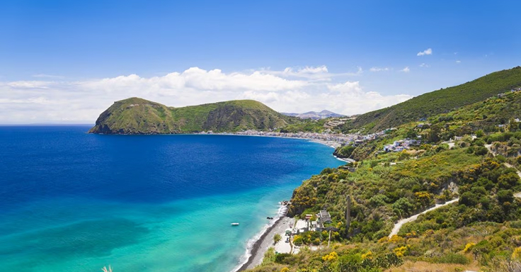
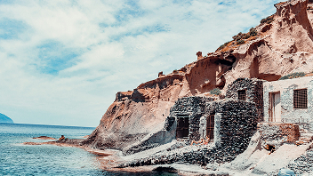
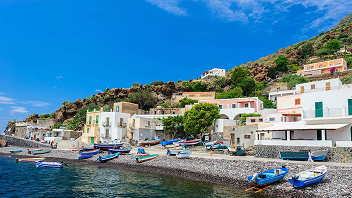
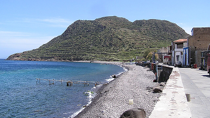

La vita nelle isole
L'essenza delle Isole Eolie attraverso gli occhi di chi le abita 365 giorni all'anno.

Le isole

Il polo urbano dell'arcipelago, unico centro ad offrire scuole superiori, ospedale e servizi attivi tutto l'anno.

L'isola verde e produttiva, dotata di autonomia idrica, agricoltura florida e una comunità stanziale solida e viva.

La più isolata e selvaggia: assenza di auto, spostamenti a piedi o a mulo e pluriclassi scolastiche.

La vita all'ombra del vulcano attivo, dove la quotidianità si intreccia alla costante gestione del rischio eruttivo.

Comunità ristretta e solidale, ritmi lenti e forte impatto dell'isolamento marittimo durante i mesi invernali.

L'isola dei contrasti: dalla saturazione turistica estiva alla profonda solitudine e allo svuotamento dei mesi freddi.